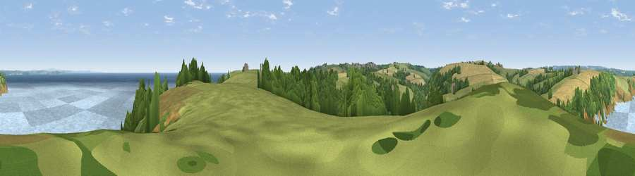

Viewpoint near Porthoustock
#9364 in England · top 15% of its area beats it · near Porthoustock · footpathWhere it is
The exact computed spot (SW 79975 23012). Click the marker for map links.
Public access: a public right of way passes within 21 m of this spot. Computed from Natural England's CRoW access layer and OpenStreetMap rights of way — not the legal definitive map. Always verify locally.
The view, rendered

A 360° render of this exact spot computed from the terrain model, tree cover and land cover — summer colours, afternoon light, calibrated against photographs of famous viewpoints. Real trees, hedges and buildings will differ in detail.
The panorama
Grey silhouette: terrain skyline in each direction (720 bearings, Earth curvature and refraction included). Dashed green: skyline with trees (+15 m) and buildings (+8 m) as obstacles. Blue strip: how far the ground is visible on each bearing.
Where the view opens
Wedge length = distance to the farthest visible ground on that bearing (vegetation-aware). Rings at 10, 25 and 50 km.
What fills the view
50% water · 24% grassland · 18% woodland · 7% cropland ·
Angular shares of the visible panorama (visual magnitude), not map area. Landscape diversity 0.54 (0–1 Shannon).
Key numbers
More beautiful places nearby
The staircase of upgrades: each row has a higher view potential than everything closer. Driving times are estimates from straight-line distance, calibrated against real road routing — check an actual route before setting out.
| Place | Direction | Drive | Score |
|---|---|---|---|
| Viewpoint near St. Keverne | W · 1 km | ~3 min | 67.2 |
| Viewpoint near Porthoustock | SSE · 2 km | ~5 min | 74.0 |
| Viewpoint near Lanner | NNW · 20 km | ~33 min | 74.5 |
| Viewpoint near Ashton | WNW · 20 km | ~35 min | 81.3 |
| Tregonning Hill | WNW · 21 km | ~36 min | 83.0 |
| St Agnes Beacon | NNW · 29 km | ~45 min | 86.1 |
| Rosewall Hill | WNW · 35 km | ~53 min | 88.0 |
| Viewpoint near Combe Martin | NNE · 148 km | ~171 min | 88.9 |
50.06643, -5.07585 · source: screening · position refined by local search. Computed location — check access rights before visiting.